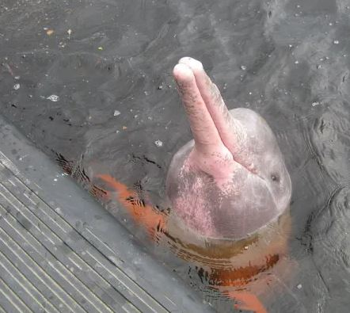

Tití emperador (Saguinus imperator)
Se trata de una especie de mono que vive en las copas de los árboles tanto en bosques secos como lluviosos. Posee un pelaje entre negro y gris, con tonos amarillos en la espalda. Los titís emperadores son animales omnívoros.
Falso vampiro (Vampyrum spectrum)
Se trata de uno de los murciélagos de mayor tamaño del mundo. Presenta un pelaje marrón oscuro o anaranjado y habita en bosques, junglas y sabanas, alimentándose de anfibios, insectos, pequeños pájaros y reptiles.
Delfín boliviano (Inia boliviensis)
También es llamado ñandú cordillerano, ñandú de Darwin, ñandú del norte, suri, choique, ñandú petiso, ñandú de las alturas, ñandú andino. Es un ave que alcanza hasta 1,20 metros de alto y hasta 25 kg. A pesar de ser un ave, no puede volar, pero sí es un gran corredor, llegando a alcanzar los 60 kilómetros por hora. Tiene un plumaje gris, blanquecino o castaño
Ñandú o avestruz andino (Pterocnemia pennata)
Se trata de uno de los murciélagos de mayor tamaño del mundo. Presenta un pelaje marrón oscuro o anaranjado y habita en bosques, junglas y sabanas, alimentándose de anfibios, insectos, pequeños pájaros y reptiles.
Escarabajo satanás (Dynastes satanas)
Se trata de una especie muy rara y llamativa por sus características taxonómicas. Sus machos son más grandes que las hembras y habitan en zonas húmedas y boscosas. Lo escarabajos satanás tienen un ciclo de vida corto, de solo dos años.
Gato andino (Leopardus jacobita)
Se trata de un pequeño felino de pelaje grisáceo plateado, orejas grandes y redondeadas, que le dan un gran sentido auditivo. Es carnívoro y se alimenta de aves, roedores y huevos de reptiles.
Guanaco (Lama guanicoe guanicoe)
El guanaco es un mamífero parecido a la llama, pero más pequeño. Este animal herbívoro tiene una cabeza pequeña con grandes orejas y ojos y vive en regiones áridas y semiáridas, aunque también en zonas montañosas de hasta 4.500 metros sobre el nivel del mar.
Pecarí quilimero (Catagonus wagneri)
Se conoce también como tagua y es un mamífero endémico de Bolivia y varios países sudamericanos. Vive en zonas secas de vegetación espinosa y se alimenta de cactus y demás plantas.
Puma o león de montaña (Puma concolor)

Es un felino que vive a lo largo de todo el continente americano. En Sudamérica habita principalmente en las proximidades de la Cordillera de los Andes. Es uno de los mayores felinos del mundo y vive en zonas de densa vegetación, donde acecha escondido a sus presas.